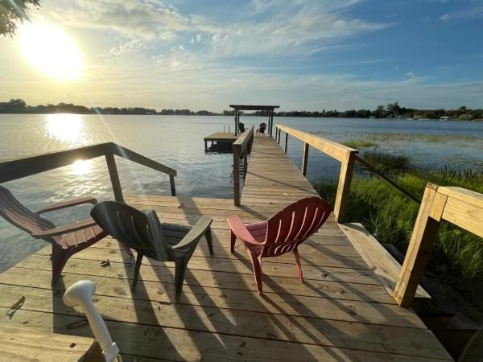

Photography
Life on Istokpoga
Submitted by members and neighbors who love this lake. Click any photo to enlarge.

Sunset on the Lake

Great Catch
Trophy Bass

Lake Wildlife

Sunrise on the Lake

Istokpoga Sunset
Share your lake photos with us on Facebook to be featured here.